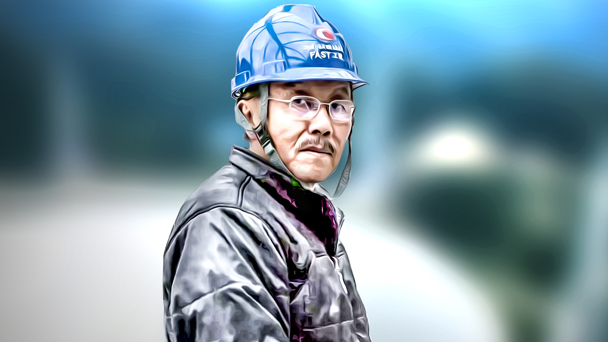

南仁东
中国国家天文台首席科学家、人民科学家
南仁东（1945年2月19日—2017年9月15日），男，满族，吉林辽源人，中国天文学家、中国科学院国家天文台研究员，人民科学家。 曾任FAST工程首席科学家兼总工程师，主要研究领域为射电天体物理和射电天文技术与方法，负责国家重大科技基础设施500米口径球面射电望远镜（FAST）的科学技术工作。 2017年5月，获得全国创新争先奖；2017年7月，入选为2017年中国科学院院士增选初步候选人.

南仁东1963年就读于清华大学，于中国科学院研究生院获硕士、博士学位。后在日本国立天文台任客座教授，1982年，他进入中国科学院北京天文台工作。 1994年起，一直负责FAST的选址、预研究、立项、可行性研究及初步设计。作为项目首席科学家、总工程师，负责编订FAST科学目标，全面指导FAST工程建设， 并主持攻克了索疲劳、动光缆等一系列技术难题。2016年9月25日，其主持的FAST落成启用。
2017年9月15日晚，南仁东因肺癌逝世，享年72岁。2018年4月，南仁东与厉声教等一同被评为“逝世的十位国家脊梁”。 2018年12月18日，党中央、国务院授予南仁东同志改革先锋称号，颁授改革先锋奖章，并获评“中国天眼”的主要发起者和奠基人。 2019年9月17日，国家主席习近平签署主席令，授予南仁东“人民科学家”国家荣誉称号。2019年9月25日，被评选为“最美奋斗者”。